LLaMA 3.2 - Vision¶
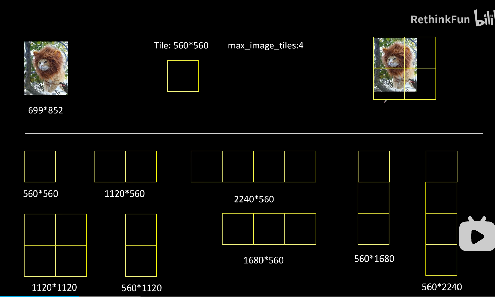
唯一原则是把图片进行缩小，缩小比例最小能适配的那个预设，就选择那个预设。
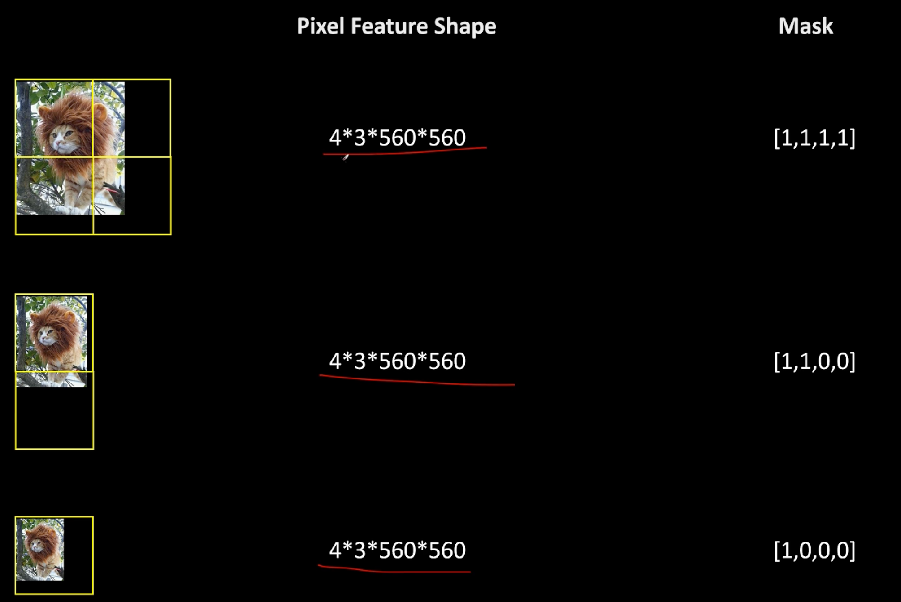
4个块，3个通道，块大小是560*560
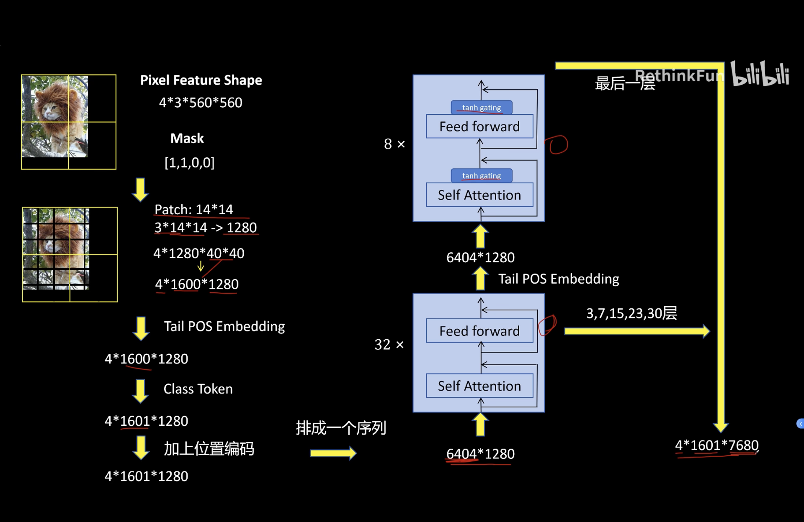
vision encoder部分：ViT这种模型前面的块更关注局部细节，后面的块更关注全局信息。所以将后面这8层称之为Global Transformer。
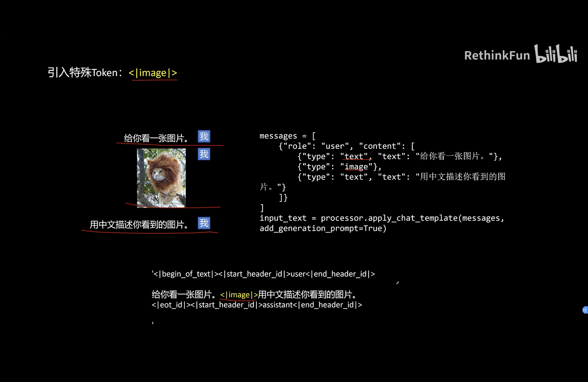
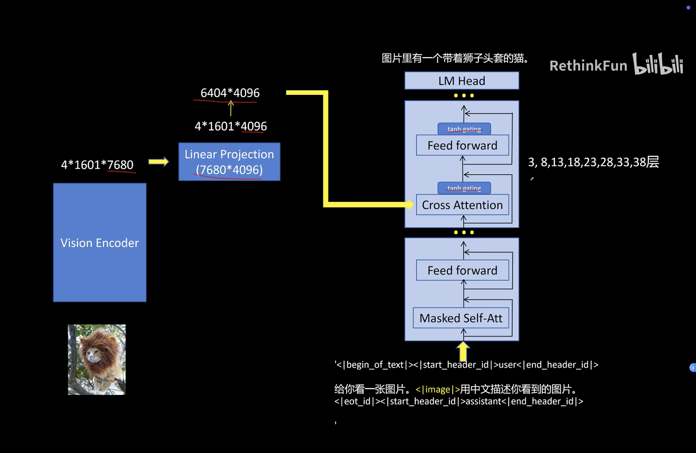
llm部分：使用的是预训练好的LLaMA 3.1的模型。
是在原本的冻结的预训练模型的Transformer块之间加入可训练的Cross Attention的Transformer，Cross attention的Query来自于上一层的输出，K和V来自视觉。Cross attention的这些Transformer模块里面也加入了常见的tanh gating的机制，目的是为了在训练初期不影响原始语言模型的能力。🚗
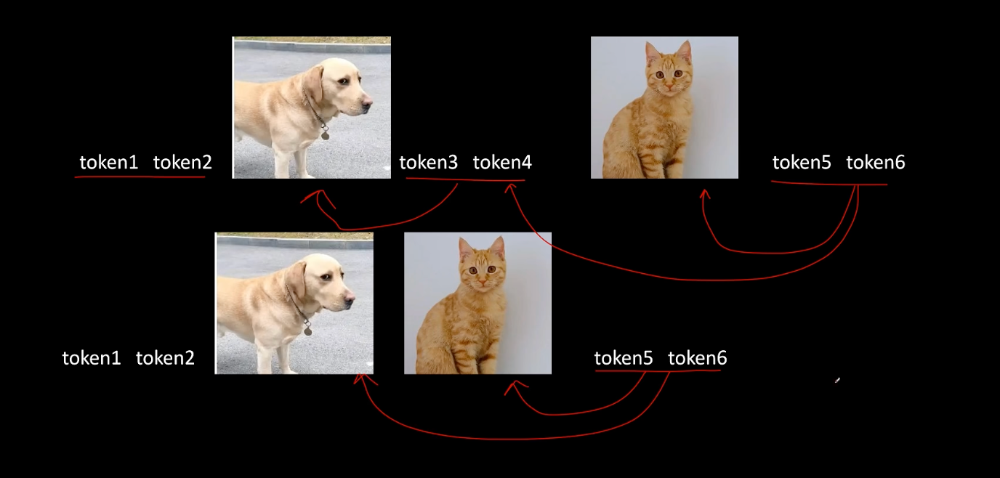
交错图文mask：设计的Mask使得文本只能看到最近前面的图片。比如这里的Token 5能够看到猫的图片，但是看不到狗的图片。不过如下图所示，如果猫和狗两张图之间没有文本的话，那么Token 5是能够同时看到狗和猫的图片的。这个设计和Flamingo里面的设计是一样的。
tanh gating 🚗¶
你说的应该是 tanh gating（双曲正切门控）。
Llama 3.2 Vision 在 Llama 文本主干中插入 Cross-Attention 层，让文本特征读取视觉编码器输出。但它不会直接把 Cross-Attention 的结果全部加到文本特征上，而是先乘一个可学习的门控系数：
$$ h_{\text{out}}¶
h_{\text{residual}} + \tanh(g)\cdot h_{\text{vision}} $$ 其中 (g) 是一个可学习的标量参数，(\tanh(g)) 决定视觉信息注入文本主干的强度。
1. 初始化时关闭视觉分支¶
Cross-Attention Adapter 是后来插入预训练 Llama 3.1 的新模块。为了避免新加入的随机视觉分支一开始破坏原有语言能力，门控参数初始化为 0。
此时： $$ \tanh(0)=0 $$ 所以最初：
输出 = 原始文本残差 + 0 × 视觉信息
模型刚开始训练时，行为基本等同于原来的纯文本 Llama。随着多模态训练进行，门控参数逐渐学习，视觉信息才被平稳地注入文本主干。官方实现确实将 Cross-Attention 层中的两个门控参数初始化为 0。(GitHub)
2. 每个 Cross-Attention 层有两个门¶
Llama 3.2 Vision 的 Cross-Attention Decoder Layer 中有两个独立门控：
cross_attn_attn_gate：控制 Cross-Attention 输出注入多少；cross_attn_mlp_gate：控制该层后续 MLP 输出注入多少。
流程可以理解为：
文本隐藏状态
↓
Cross-Attention 读取图像特征
↓
tanh attention gate
↓
加回文本残差
↓
MLP
↓
tanh MLP gate
↓
再次加回残差
两个门都是每层一个可学习标量，而不是为每个 token 动态生成不同门值。(GitHub)
3. 为什么使用 tanh，而不是 sigmoid¶
主要有两个直观原因。
第一，tanh 在输入为 0 时输出正好为 0，因此可以通过零初始化让新分支完全关闭。Sigmoid 在输入为 0 时输出 0.5，无法自然实现“初始不注入”。
第二，tanh 的范围是 ([-1,1])，既可以控制视觉分支的注入强度，也允许模型学习负向修正；Sigmoid 只能输出正值。
4. 它解决什么问题¶
它主要解决的是：🚗
如何在给已经训练好的纯文本 Llama 增加视觉模块时，既学会使用图像信息，又尽量不破坏原有语言能力。
Meta 的模型卡说明，Llama 3.2 Vision 是在 Llama 3.1 上增加视觉 Adapter，通过一系列 Cross-Attention 层把图像编码器表示注入核心 LLM。Tanh gating 就是控制这些新增分支影响程度的稳定化机制。(GitHub)
一句话理解：
Tanh gating 相当于视觉信息进入 Llama 的可学习阀门：初始关闭，训练过程中再逐渐学习应该打开多少。
LLaMA¶
🚗¶
Llama1：RMSNorm、SwiGLU、RoPE，禁用公开数据达到SOTA
Llama2：数据量增加（40%、MHA（7B/13B）/ GQA（34B/70B）、PPO（双奖励模型：内容/安全）
Llama3.1：全尺寸GQA、RoPE基频提升到500,000、数据量增加（8倍）、DPO
Llama3.2：多模态能力，在语言模型每 4 个 self-attention 层后插入 cross-attention 层
目录¶
- 核心要点
- 1. LLaMA 1: Open and Efficient Foundation Language Models
- 2. LLaMA 2: Open Foundation and Fine-Tuned Chat Models
- 3. LLaMA 3 / 3.1: The Llama 3 Herd of Models
- 4. LLaMA 3.2: 多模态能力
- 总结与对比
核心要点¶
- LLaMA 1（2023.02）证明了"小模型+更多数据"的有效性，挑战了 Chinchilla 的 compute-optimal 训练范式，并系统性地将 RMSNorm、SwiGLU、RoPE 整合到统一架构中，成为后续几乎所有开源 LLM 的标配。
- LLaMA 2（2023.07）引入 GQA（Grouped-Query Attention）大幅降低推理时 KV Cache 内存开销，完整公开了 SFT + RLHF（双奖励模型 + Rejection Sampling + PPO）的对齐流程，并将上下文从 2048 扩展到 4096。
- LLaMA 3/3.1（2024.07）将词表从 32K 扩展到 128K（英文压缩率提升 4 倍），训练数据从 2T 扩展到 15T+ tokens，推出 405B 旗舰模型，并通过 continued pre-training 支持 128K 上下文和原生工具调用。
- LLaMA 3.2（2024.09）首次加入视觉和语音多模态能力，采用组合式架构（ViT-H/14 + Conformer + 适配器），冻结 LLM 参数只训练适配器，在不影响文本能力的前提下实现多模态理解。
- LLaMA 系列的演进主线为：数据规模（1.4T → 2T → 15T+）、词表（32K → 128K）、上下文（2K → 4K → 128K）、注意力机制（MHA → GQA）、对齐方式（无 → RLHF → DPO）、模态（纯文本 → 视觉+语音）。
1. LLaMA 1: Open and Efficient Foundation Language Models¶
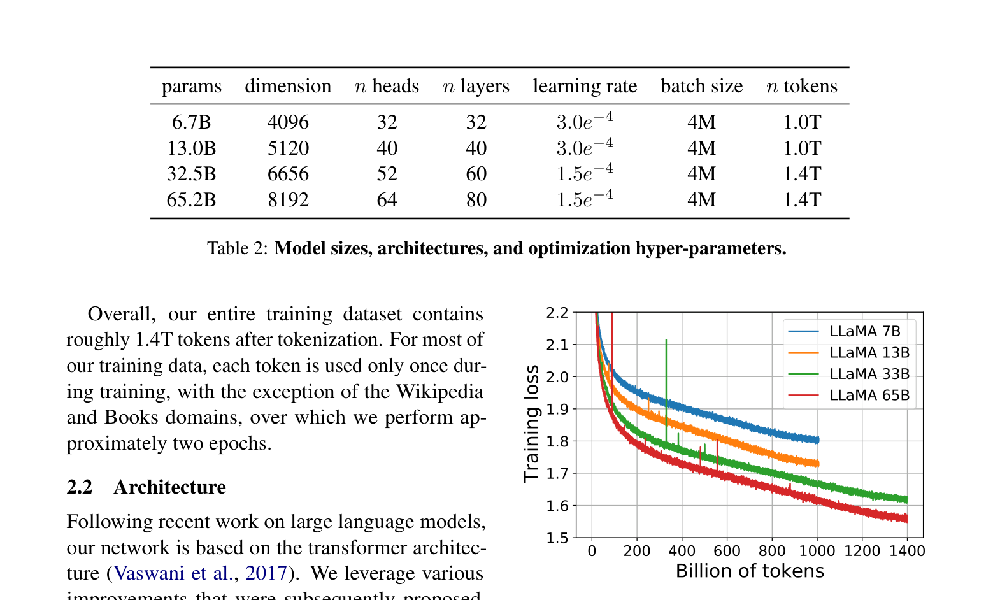
Figure 1: 各尺寸模型在训练过程中的 loss 曲线——7B 模型在 1T tokens 后仍在持续改善1.1 研究动机¶
推理效率比训练效率更重要
Hoffmann et al. (2022) 的 Chinchilla scaling laws 关注在给定训练计算预算下如何最优分配模型大小和数据量。但 LLaMA 论文指出：
"Given a target level of performance, the preferred model is not the fastest to train but the fastest at inference."
虽然训练一个大模型达到某个性能水平可能更便宜，但一个更小但训练更久的模型在推理时会更便宜。例如：
"Although Hoffmann et al. (2022) recommends training a 10B model on 200B tokens, we find that the performance of a 7B model continues to improve even after 1T tokens."
仅使用公开数据实现开源
现有的顶级大模型（GPT-3、Chinchilla、PaLM）都依赖私有或未公开的数据集。LLaMA 强调：
"Unlike Chinchilla, PaLM, or GPT-3, we only use publicly available data, making our work compatible with open-sourcing."
1.2 模型架构 🚗¶
LLaMA 基于 Transformer，引入三项关键改进：
| 改进 | 来源 | 具体描述 |
|---|---|---|
| Pre-Norm + RMSNorm | GPT-3 | 对每个子层的输入归一化（而非输出），使用 RMSNorm 代替 LayerNorm |
| SwiGLU 激活函数 | PaLM | 用 SwiGLU 替换 ReLU，FFN 维度使用 2/3 × 4d |
| RoPE 旋转位置编码 | GPTNeo | 移除绝对位置嵌入，在每一层添加旋转位置编码 |
各模型超参数：
| 参数量 | Dimension | n_heads | n_layers | n_tokens |
|---|---|---|---|---|
| 6.7B | 4096 | 32 | 32 | 1.0T |
| 13.0B | 5120 | 40 | 40 | 1.0T |
| 32.5B | 6656 | 52 | 60 | 1.4T |
| 65.2B | 8192 | 64 | 80 | 1.4T |
1.3 训练数据¶
训练数据完全来自公开可用来源，总计约 1.4T tokens：
| 数据集 | 采样比例 | 说明 |
|---|---|---|
| English CommonCrawl | 67.0% | CCNet 流水线处理，去重+质量过滤 |
| C4 | 15.0% | 公开预处理的 CommonCrawl |
| Github | 4.5% | 仅保留 Apache/BSD/MIT 许可证项目 |
| Wikipedia | 4.5% | 覆盖 20 种语言 |
| Gutenberg + Books3 | 4.5% | 公共领域书籍 |
| ArXiv | 2.5% | LaTeX 文件 |
| Stack Exchange | 2.0% | 28 个最大站点的高质量问答 |
Tokenizer：SentencePiece BPE，将所有数字拆分为单个数字，对未知 UTF-8 字符回退到字节级别。
1.4 LLaMA 1 总结¶
- 证明"小模型+更多数据"有效，挑战了"越大越好"的主流范式
- 仅用公开数据达到 SOTA，首次证明不需要私有数据
- 架构整合与验证：RMSNorm + SwiGLU + RoPE 成为开源 LLM 标配
- 全面开源，直接催生 Alpaca、Vicuna、Koala 等后续工作
2. LLaMA 2: Open Foundation and Fine-Tuned Chat Models¶
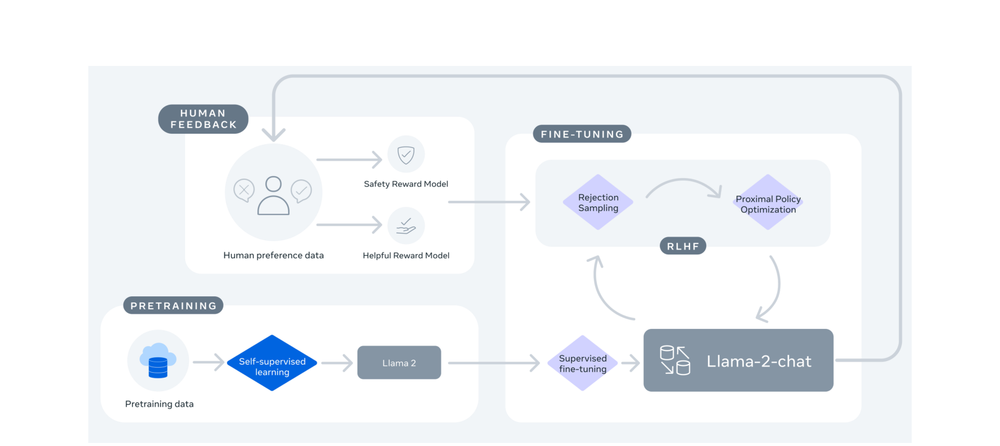
Figure 4: LLaMA 2-Chat 训练流程——预训练 → SFT → 迭代式 RLHF（Rejection Sampling + PPO）2.1 相比 LLaMA 1 的改进¶
训练数据¶
- 数据量：统一使用 2T tokens（增加 40%）
- 数据来源：来自公开来源的新混合数据，不包含 Meta 用户数据
- 数据处理：更严格的数据清洗，上采样高事实性来源，移除含私人信息的网站
- 语言分布：约 89.7% 英语
架构变化¶
| 配置项 | LLaMA 1 | LLaMA 2 |
|---|---|---|
| 注意力机制 | MHA | MHA（7B/13B）/ GQA（34B/70B） |
| 上下文长度 | 2048 | 4096 |
| 其余架构 | RMSNorm + SwiGLU + RoPE | 相同 |
GQA（Grouped-Query Attention）： - 多个查询头共享一组键值投影（8 个 KV 头） - 大幅降低推理时 KV Cache 的内存开销 - 消融实验表明与 MHA 性能相当，优于 MQA - 为保持参数量一致，FFN 维度增加 1.3 倍
2.2 RLHF 对齐流程¶
监督微调 (SFT)¶
核心理念："Quality Is All You Need"
"By setting aside millions of examples from third-party datasets and using fewer but higher-quality examples from our own vendor-based annotation efforts, our results notably improved."
- 仅收集了 27,540 条 SFT 标注即停止
- 对 180 个样本人工审查，发现模型输出与人工标注"具有竞争力"
- 仅对回答 token 计算损失
人类偏好数据收集¶
- 二元比较协议：标注者写 prompt → 从两个模型回答中选择更好的
- 分有用性和安全性两个维度
- 总共收集超过 141 万条 Meta 内部偏好数据 + 开源数据共约 292 万条
双奖励模型¶
由于有用性和安全性存在张力（tension），训练两个独立奖励模型：
- Helpfulness RM：在 Meta Helpfulness 数据 + 等量混合安全数据上训练
- Safety RM：在 Meta Safety + Anthropic Harmless + 混合有用性数据上训练
训练目标：二元排序损失 + 边际组件
迭代式微调（RLHF V1 → V5）¶
(1) Rejection Sampling Fine-tuning： - 对每个 prompt 采样 K 个回答，用奖励模型评分选最高分 - 仅对 70B 执行，较小模型通过蒸馏 70B 的拒绝采样数据获得能力
(2) PPO： - 从 V4 开始叠加 PPO - 组合奖励：对安全相关 prompt 使用安全奖励，否则使用有用性奖励 - KL 惩罚项防止偏离原始策略
Ghost Attention (GAtt)¶
解决多轮对话后忘记初始系统指令的问题：将系统指令拼接到所有用户消息中，微调时仅对最后一轮的 token 计算损失。
2.3 LLaMA 2 总结¶
- 训练数据增加 40%，进行更严格的数据清洗
- GQA 注意力机制大幅降低推理时 KV Cache 内存开销
- 上下文从 2048 扩展到 4096
- 完整公开了 SFT → 人类偏好收集 → 双奖励模型 → Rejection Sampling → PPO 的全流程
- 仅用 27,540 条高质量 SFT 数据即达到优秀效果
- 开放权重供研究和商业使用
3. LLaMA 3 / 3.1: The Llama 3 Herd of Models¶
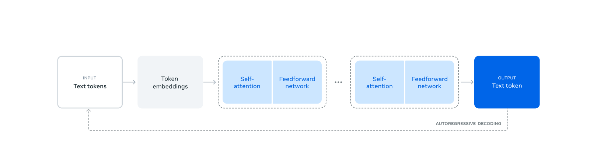
Figure 1: LLaMA 3 的整体架构和训练流程3.1 相比 LLaMA 2 的改进 🚗¶
架构变化¶
| 参数 | 8B | 70B | 405B |
|---|---|---|---|
| Layers | 32 | 80 | 126 |
| Model Dim | 4,096 | 8,192 | 16,384 |
| FFN Dim | 14,336 | 28,672 | 53,248 |
| Attn Heads | 32 | 64 | 128 |
| KV Heads | 8 | 8 | 8 |
| Vocab Size | 128K | 128K | 128K |
关键架构改进： - GQA：所有尺寸统一使用（8 个 KV 头） - 128K 词表：tiktoken tokenizer + 28K 非英语 tokens，英文压缩率从 3.17 提升至 3.94 chars/token - RoPE 基频提升：从 10,000 增加到 500,000 - 文档掩码：防止同一序列内不同文档间的自注意力交互
训练数据¶
- 规模：从 2T 扩展到 15T+ tokens（约 8 倍增长）
- 数据配比：约 50% 通用知识、25% 数学与推理、17% 代码、8% 多语言
- 质量改进：
- 多层去重：URL 级、文档级（MinHash）、行级去重
- 模型质量过滤：fasttext 分类器 + DistilRoberta 质量评分器
- 专门的代码和推理数据提取管道
- Annealing：最后 40M tokens 使用高质量数据退火训练 + Polyak averaging
Scaling Law 研究¶
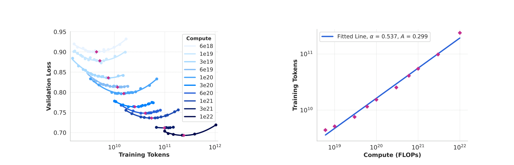
Figure 2: Scaling Law IsoFLOPs 曲线——预测最优模型大小和数据量的权衡两阶段方法： 1. 在 6×10¹⁸ 到 10²² FLOPs 范围内训练小模型，建立 NLL 与 FLOPs 的关系 2. 利用 scaling law 建立下游任务 NLL 与准确率之间的 sigmoid 关系
关键发现： - 拟合得到 N(C) = 0.29 × C^0.53 - 外推到 3.8×10²⁵ FLOPs 建议训练 402B 参数模型在 16.55T tokens* 上 - IsoFLOPs 曲线在最优值附近变得平坦，说明性能对模型大小/数据量权衡相对鲁棒
3.2 LLaMA 3.1 的新特性¶
128K 上下文窗口¶
- 通过 continued pre-training 分六个阶段递增扩展（8K → 128K）
- 长上下文预训练使用约 800B tokens
- 评估标准：短上下文评测性能完全恢复 + Needle-in-a-Haystack 完美表现
- 405B 在 Needle-in-a-Haystack 上实现 100% 检索率
工具调用¶
原生支持三种核心工具： - 搜索引擎：Brave Search API - Python 解释器：代码生成和执行 - 数学计算引擎：Wolfram Alpha API
多语言支持¶
正式支持 8 种语言。
3.3 LLaMA 3/3.1 总结¶
- 128K 词表，英文压缩率提升 4 倍
- 训练数据从 2T 扩展到 15T+ tokens，建立完整的数据质量控制体系
- 405B 旗舰模型，126 层 Transformer，3.8×10²⁵ FLOPs 训练
- Scaling Law 验证：两阶段方法论跨越四个数量级准确预测旗舰模型性能
- 128K 上下文 + 原生工具调用（搜索引擎、Python 解释器、数学计算引擎）
- 16K H100 上 90%+ 有效训练时间，54 天内 466 次中断（78% 归因于硬件问题）
4. LLaMA 3.2: 多模态能力¶
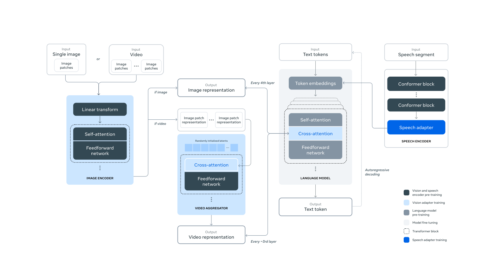
LLaMA 3.2 多模态架构总览：组合式设计，视觉/语音编码器通过适配器集成到冻结的 LLM 中4.1 视觉能力¶
图像编码器¶
- ViT-H/14 变体：原始 630M 参数，在 2.5B 图文对上训练 5 个 epoch
- 添加 8 个 gated self-attention 层（总计 40 个 transformer blocks），最终 850M 参数
- 多层特征提取：从第 4、8、16、24、31 层及最终层提取特征
- 每个 patch 产生 7680 维表示（16×16 = 256 个 patches）
- 训练过程中不冻结图像编码器参数
图像适配器¶
- 在语言模型每 4 个 self-attention 层后插入 cross-attention 层
- 使用 GQA 提高效率
- 对于 405B 模型，cross-attention 层引入约 100B 参数
- 训练时冻结语言模型参数，只更新编码器和适配器
- 两阶段预训练：初始预训练（~6B 图文对）+ 退火训练（~500M 高质量图像）
视频适配器¶
- 最多处理 64 帧（均匀采样）
- 时序聚合器：Perceiver Resampler，将 32 个连续帧合并为 1 个
- 额外的 video cross-attention 层
4.2 语音能力¶
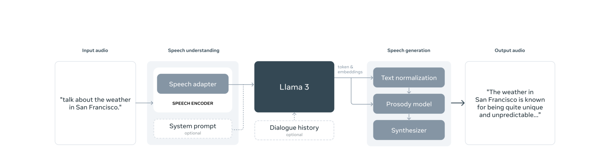
LLaMA 3.2 语音模块架构：Conformer 编码器 + 轻量适配器，输出直接作为 token 输入 LLM语音编码器¶
- Conformer 模型：1B 参数，24 层
- 使用 BEST-RQ 自监督算法在约 15M 小时语音数据上预训练
语音适配器¶
- 约 100M 参数
- 包含卷积层（stride-2 降至 80ms 帧长）、Rotary Transformer 层和线性映射层
- 输出直接作为 token 表示输入语言模型（不同于视觉模块使用 cross-attention）
4.3 LLaMA 3.2 总结¶
- 组合式多模态架构：通过适配器将预训练的视觉/语音编码器集成到 LLM 中
- 视觉编码器：ViT-H/14 变体（850M 参数），多层特征提取 + cross-attention 适配器，不冻结编码器参数
- 语音模块：Conformer 编码器（1B 参数）+ 轻量适配器
- 冻结语言模型参数只训练适配器，可以保护已有的文本能力
- 视觉和语音模块采用不同的集成策略（cross-attention vs 直接 token 输入），体现了针对不同模态的设计灵活性
总结与对比¶
四代方法对比 🚗¶
| 维度 | LLaMA 1 | LLaMA 2 | LLaMA 3/3.1 | LLaMA 3.2 |
|---|---|---|---|---|
| 时间 | 2023.02 | 2023.07 | 2024.07 | 2024.09 |
| 模型尺寸 | 7B/13B/33B/65B | 7B/13B/70B | 8B/70B/405B | 1B/3B/11B/90B |
| 训练数据🚗 | 1.0-1.4T | 2T | 15T+ | 同上 |
| 词表大小 | 32K | 32K | 128K | 128K |
| 上下文🚗 | 2048 | 4096 | 8K → 128K | 128K |
| 注意力🚗 | MHA | MHA/GQA | GQA | GQA |
| 归一化🚗 | RMSNorm (Pre) | RMSNorm (Pre) | RMSNorm (Pre) | RMSNorm (Pre) |
| 激活函数🚗 | SwiGLU | SwiGLU | SwiGLU | SwiGLU |
| 位置编码🚗 | RoPE (10K) | RoPE (10K) | RoPE (500K) | RoPE (500K) |
| 对齐方式🚗 | 无 | SFT + RLHF | SFT + DPO | 同左 |
| 多模态🚗 | 无 | 无 | 无 | 视觉 + 语音 |
| 开放权重 | 研究许可 | 商业许可 | 商业许可 | 商业许可 |
关键技术洞察¶
-
架构核心不变：RMSNorm + SwiGLU + RoPE 从 LLaMA 1 开始贯穿全系列，成为开源 LLM 的事实标准
-
演进主线：
- 数据：1.4T → 2T → 15T+（规模驱动性能）
- 词表：32K → 128K（压缩效率提升 4 倍）
- 上下文：2K → 4K → 128K（长文本能力飞跃）
- 对齐：无 → RLHF (PPO) → DPO（更简单有效）
-
模态：纯文本 → 视觉 + 语音（多模态统一）
-
推理效率优先：LLaMA 1 提出推理成本比训练成本更重要，这一理念贯穿全系列——小模型训练更久但推理更便宜
-
Scaling Law 的持续验证：从 LLaMA 1 的"小模型+更多数据"到 LLaMA 3 的两阶段 scaling law 方法论，证明了规模化是提升性能的核心路径
-
开源推动社区发展：LLaMA 1 开启开源大模型时代，直接催生 Alpaca、Vicuna 等后续工作；LLaMA 2 开放商业许可；LLaMA 3 推出 405B 旗舰模型与 GPT-4 竞争
-
多模态的组合式设计：LLaMA 3.2 采用适配器架构而非端到端训练，保护已有文本能力的同时实现多模态理解，体现了模块化设计的灵活性